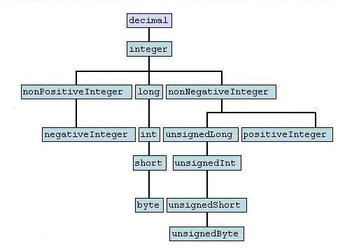

|
|

|
|
|
|
| Apache | WS |
XSD ObjectsXSD ObjectsXML Schema Part 2 : DatatypesThe types and formatting of data transmitted in a SOAP message is defined by the XML Schema, in particular Part 2 : Datatypes. The full specification can be seen here. Built-in typesWithin section 3 of the above specification 44 built-in datatypes are described, encompasing Strings, numeric, time and encoded binary datatypes. These datatypes are split into two groups, primitive and derived types.
Primitive TypesThe XML schema provides 19 primitive types. As all data is represented in text form within XML, the value space for each datatype needs to be specified, for example numeric types cannot contain alphabetic characters. To do this, each type defines a number of contraining facets and the values within these facets allows the XML engine to validate the data. See Constraining Facets below for further information on how these are used.
See section 3.2 of the specification for full detail on each datatype. Derived TypesThe XML Schema allows additional types to be derived from the primitive types, and has 25 built-in derived types. 12 data types are derived from the string primitive data type. The remaining 13 data types are derived from the decimal primitive data type.  A derived type uses the same contraining facets as the type from which it is derived, but provides differing values for one or more facet so as to further restrict the value space. For example; the decimal allows fraction digits, while the integer derived type sets this facet to 0. See section 3.3 of the specification for full detail on each datatype. User defined derived typesIn the same way as the XML Schema defines a number of built-in datatypes the user can also provide additional derived types. This can be done in the WSDL document, or an XSD referred from a WSDL document. The following shows how you can create a new type called direction, which is derived from the NMTOKEN built-in type, to only have the values fromKey and toKey, by restricting the enumeration constraining facet. <xsd:simpleType name="direction">
<xsd:restriction base="NMTOKEN">
<xsd:enumeration value="fromKey"/>
<xsd:enumeration value="toKey"/>
</xsd:restriction>
</xsd:simpleType>
Constraining FacetsAs mentioned above, the value spaces of each of the built-in types are controlled by constraining facets. The XML Schema provides 12 constraining facets, as described in section 4.3. The 12 constraining facets are:
Each primitive datatype uses a subset of these contraining facets, to suit the characteristics of that particular datatype. Section 4.1.5 of the XML Schema provides a table of which facets are used for each datatype. It is permitted for the value of a constraining facet to be undefined, with the exception of whitespace which must be specified as one of preserve, replace or collapse. Axis C++ Implementation of XSD built-in typesC++ ObjectsIn version 1.5 of Apache Axis C++, an object model was introduced to the SOAP engine for the XSD built-in types. The object heirarchy mimics the order in which the datatypes are derived from each other. IAnySimpleType InterfaceAll the XSD type objects implement the IAnySimpleType interface, which provides the following methods, which must be implemented by all implementing classes
AxisChar* serialize() throw (AxisSoapException)
void deserialize(const AxisChar* valueAsChar) throw (AxisSoapException) XSDTYPE getType() void* getValue() In addition each implementation of this interface must provide a parameterized constructor, such that it can be constructed and will immediately serialize the provided value. The IAnySimpleType interface provides the following utility method, which should be called by all implementing classes when serializing data.
AxisChar* serialize(const AxisChar* value) throw (AxisSoapException);
This method resolves reserved characters (eg & is replaced by &), processes Whitespace, validates Pattern and ensures value is contained within Enumeration. Object HeirarchyBelow is a portion of the C++ object heirarchy, which, as you will notice, is very similar to the diagram of built-in datatypes in the XSD Schema.
Mapping XSD built-in types to C/C++ typesWithin the Axis engine mappings are provided between the XSD built-in types and the native C/C++ types. To aid understanding and maintain consistency, these are declared as typedefs to match the XSD type names. These typedefs should be used throughout the engine for:
C++ TypesThe mapping from C++ types to the XSD built-in types is defined in AxisUserAPI.hpp. For each XSD built-in type a corresponding typedef is declared in the form xsd__<type>, eg: xsd__string. Note: AxisUserAPI.hpp only declares those types currenty supported within the user API. C TypesSimilar to the C++ API, the mapping from C types to the XSD built-in types is defined in AxisUserAPI.h. A typedef is declared for each XSD built-in type, in the form xsdc__<type>, eg: xsdc__string. IConstrainingFacet InterfaceAll the Constraining Facet objects implement the IConstrainingFacet interface. This provides the following utility method, which allows the XSD objects to determine if a given facet has been defined:
bool isSet();
The following Constraining Facet objects provide utility methods to assist the serialization/deserialization of XSD built-in types: Enumeration
void validateEnumeration(const AxisChar* value) throw (AxisSoapException);
Pattern
void validatePattern(const AxisChar* value) throw (AxisSoapException);
WhiteSpace
const AxisChar* processWhiteSpace(const AxisChar* valueToProcess);
Current LimitationsFunction LimitationCurrently, the XSD objects are completely internal to the Axis engine. In the future we may wish to expose these on the external API, such that customers (via WSDL2Ws) will be able to derive additional simple types simply by refining one or more of the constraining facets, then simply re-using the serialization/deserialization logic we have already written. Pattern Constraining FacetThe implementation of the pattern constraining facet is incomplete. It needs to validate against a given regular expression, following this, the pattern for each of data types needs to be updated with the regular expression to describe their particular data type. ReferencesXML Schema Part 2 : Datatypes - http://www.w3.org/TR/2001/REC-xmlschema-2-20010502/ Outstanding Issues |